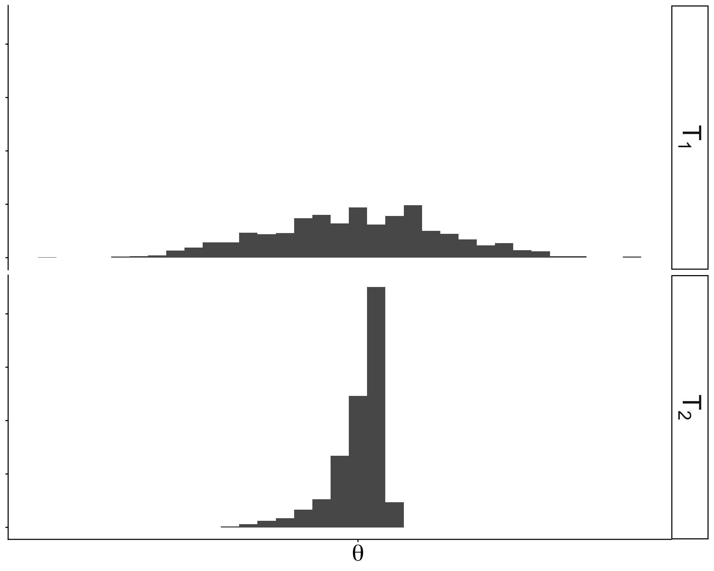
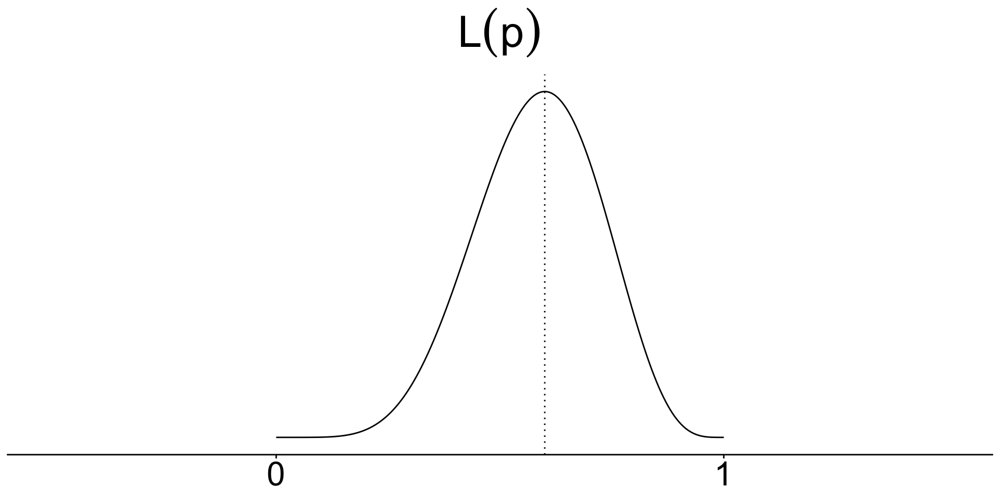
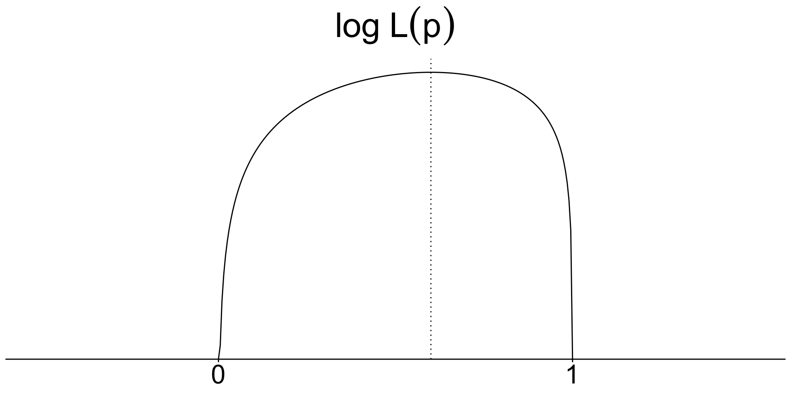
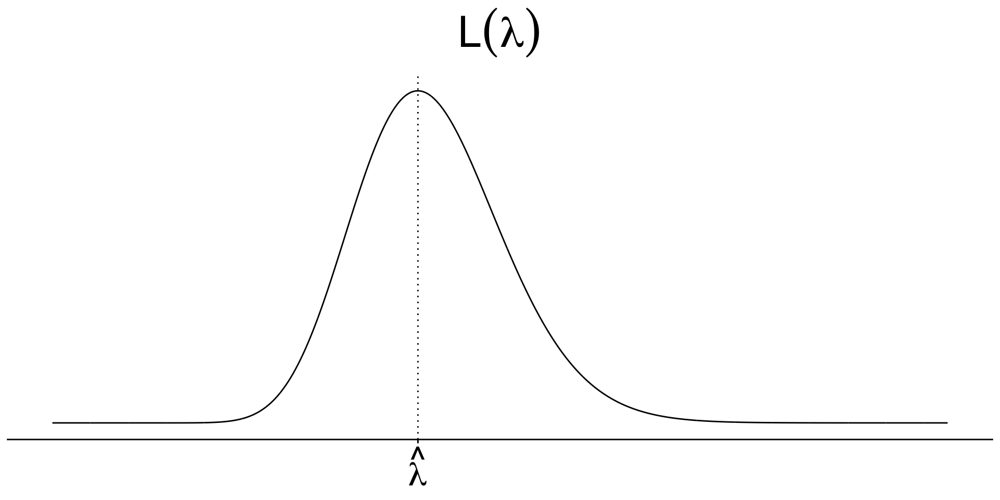
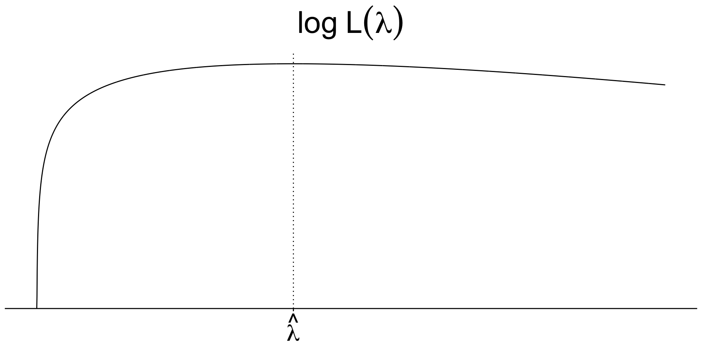
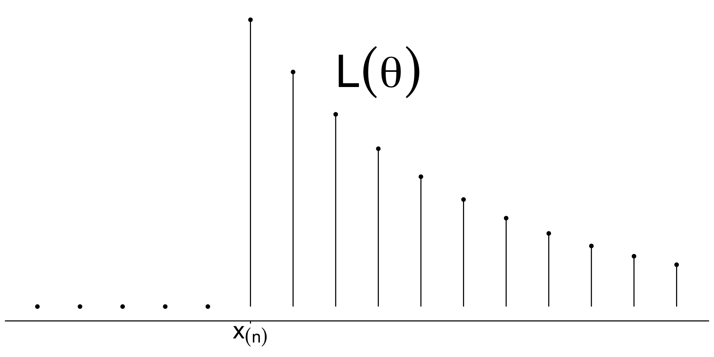

Week 5: Estimation Methods
STA238: Probability, Statistics, and Data Analysis II
February 3, 2026
Example: Estimating the number of German tanks
See Sections 20.1 and 1.5 from Dekking et al.
- The Allied forces during WWII wanted to estimate the total number of German tanks.
- They used the serial numbers of captured tanks to estimate the total number of tanks produced.
Example: Modelling the serial numbers
Denote serial numbers of \(n\) captured German tanks (recoded as integer values) with \(x_1\), \(x_2\), …, \(x_n\).
These serial numbers are from \(1\), \(2\), …, \(\theta\), \(\theta \ge n\).
Assume the tanks are captured randomly; each tank has an have equal likelihood of being captured.
Thus, we can model serial number \(i\) as a realization of \(X_i\) with \[P(X_i=x)=\frac{1}{\theta}\] for \(x=1,2,...,\theta\) and \(i=1,2,...,n\).
\(X_1,X_2,...,X_n\) are
_________________________
but not _____________________.
Example: Modelling the serial numbers
Denote serial numbers of \(n\) captured German tanks (recoded as integer values) with \(x_1\), \(x_2\), …, \(x_n\).
These serial numbers are from \(1\), \(2\), …, \(\theta\), \(\theta \ge n\).
Assume the tanks are captured randomly; each tank has an have equal likelihood of being captured.
Thus, we can model serial number \(i\) as a realization of \(X_i\) with \[P(X_i=x)=\frac{1}{\theta}\] for \(x=1,2,...,\theta\) and \(i=1,2,...,n\).
\(X_1,X_2,...,X_n\) are
_________________________
but not _____________________.
\[P(X_1=x_1|X_2=x_2)\neq P(X_1=x_1)\]
An unbiased estimator based on the sample mean, \(T_1\)
What is the expected value of \(\overline{X}_n=\left.\sum_{i=1}^nX_i\right/n\)?
An unbiased estimator based on the sample mean, \(T_1\)
What is the expected value of \(\overline{X}_n=\left.\sum_{i=1}^nX_i\right/n\)?
\[\mathbb{E}(\overline{X}_n)=\mathbb{E}(X_1)=\frac{1}{\theta}\sum_{i=1}^\theta i=\frac{\theta+1}{2}\]
\[\implies T_1=2\overline{X}_n - 1\] is an unbiased estimator for \(\theta\).
Method of moments
- For example, the (sample) mean is the first (sample) moment.
- Sample moments are unbiased estimators of the population moments if they exist.
- Independent samples generally produces consistent method of moment estimators.
The \(k\)th moment of a random variable \(X\) is defined by \(\mu'_k=\mathbb{E}\left[X^k\right]\).
The corresponding \(k\)th sample moment is defined by \(m_k=\left.\sum_{i=1}^n X_i^k\right/n\) for a sample \(X_1\), \(X_2\), …, \(X_n\) that are identically distributed as \(X\).
The method of moments constructs an estimator for a parameter \(\theta=g\left(\mu'_1, \mu'_2, ...,\mu'_K\right)\) as a function of the sample moments \(\widehat{\theta}=g\left(m_1, m_2, ..., m_K\right)\).
Exercises
Suppose \(X_1,X_2,...,X_n\overset{i.i.d}\sim F\). For each of the following \(F\), construct the method of moment estimator for \(\theta\).
- \(\text{Unif}(0, \theta)\)
- \(\text{Geom}(p)\) with pmf \(p(x)=(1-p)^xp\)
- \({N}(0, \theta)\)
Exercises
Suppose \(X_1,X_2,...,X_n\overset{i.i.d}\sim F\). For each of the following \(F\), construct the method of moment estimator for \(\theta\).
- \(\text{Unif}(0, \theta)\)
- \(\text{Geom}(p)\) with pmf \(p(x)=(1-p)^xp\)
- \({N}(0, \theta)\)
- Method of moments is a way to construct estimators based on the law of large numbers.
- The method is simple and intuitive.
- The method does not depend on the model distribution.
- Method of moments estimators don’t always yield unbiased and sensible estimates.
An unbiased estimator based on the maximum, \(T_2\)
What is the expected value of \(X_{(n)}\)?
\[P(X_{(n)}=x)=\left.\binom{x-1}{n-1}\right/\binom{\theta}{n}\]
\[=\frac{}{~~~~~~~~~~~~~~~~~~~~~~~~}\]
An unbiased estimator based on the maximum, \(T_2\)
What is the expected value of \(X_{(n)}\)?
\[P(X_{(n)}=x)=\left.\binom{x-1}{n-1}\right/\binom{\theta}{n}\]
\[=\frac{}{~~~~~~~~~~~~~~~~~~~~~~~~}\]
\[\mathbb{E}(X_{(n)})=\sum_{k=n}^\theta kP(X_{(n)}=k)=n\cdot\frac{\theta+1}{n+1}\]
\[\implies T_2=\frac{n+1}{n}X_{(n)}-1\] is an unbiased estimator for \(\theta\).
Which is better?
- We can study their sampling distributions via simulation some theoretical condition(s).
- Here, we assumed \(\theta=1,000\).

Example: A random award
Suppose a game randomly awards game money when you play a mini game inside the game.
The company promises the game money amount between \(1\) to \(\theta\) is awarded with an equal likelihood and results from the mini games are independent.
However, they refuse to reveal the maximum \(\theta\).
Example: A random award
| 7 | 25 |
| 1 | 99 |
Suppose you play the mini game \(n=4\) times. We know that these are i.i.d realizations of a random sample \(X_1,X_2,X_4,X_4\) with
\[P(X_1=x)=\frac{1}{\theta}\quad\text{for }x=1,2,...,\theta\]
Example: A random award
| 7 | 25 |
| 1 | 99 |
Suppose you play the mini game \(n=4\) times. We know that these are i.i.d realizations of a random sample \(X_1,X_2,X_4,X_4\) with
\[P(X_1=x)=\frac{1}{\theta}\quad\text{for }x=1,2,...,\theta\]
Using the method of moments to estimate \(\theta\),
Think about the German tank example but with replacements.
Example: A random award
| 7 | 25 |
| 1 | 99 |
Suppose you play the mini game \(n=4\) times. We know that these are i.i.d realizations of a random sample \(X_1,X_2,X_4,X_4\) with
\[P(X_1=x)=\frac{1}{\theta}\quad\text{for }x=1,2,...,\theta\]
Using the method of moments to estimate \(\theta\),
Think about the German tank example but with replacements.
\[T_1=2\bar{X}_n-1\]
The method doesn’t always produce a sensible estimate.
Is there any other way to construct an estimator?
How do we ensure the estimator only produces sensible values?
\[\implies\]
Restrict the candidates to the possible parameter values specified by the model.
How do we choose an estimate out of the candidate values?
\[\implies\]
Choose the most likely value given the data set based on the model.
We can burrow information from the model
to produce the most likely estimate given the data set.
Maximum likelihood principle
Given a data set, choose the parameter(s) of interest in such a way that the data are most likely.
Example: Two coins
Suppose I have two coins in my pocket — one with a probability of \(p_1=0.7\) of heads and the other with \(p_2=0.4\). I pull out one and hand to you.
Can you guess which is coin it is by flipping \(n\) times?
First flip: T
Example: Two coins
Suppose I have two coins in my pocket — one with a probability of \(p_1=0.7\) of heads and the other with \(p_2=0.4\). I pull out one and hand to you.
Can you guess which is coin it is by flipping \(n\) times?
First flip: T
Let \(X_1\sim\text{Ber}(p)\) represent heads with 1 and tails with 0 for the first flip. We can represent how likely \(p\) is \(p_1\) as
\[L(p_1)=P_{p_1}(X_1=0)=1-p_1=0.3\]
vs. how likely \(p\) is \(p_2\) as
\[L(p_2)=P_{p_2}(X_1=0)=1-p_2=0.6.\]
The sensible guess would be \(p_2\).
Example: Two coins
Suppose I have two coins in my pocket — one with a probability of \(p_1=0.7\) of heads and the other with \(p_2=0.4\). I pull out one and hand to you.
Can you guess which is coin it is by flipping \(n\) times?
How about 10 flips?
T, H, T, H, H, H, T, H, T, H
Example: Two coins
Suppose I have two coins in my pocket — one with a probability of \(p_1=0.7\) of heads and the other with \(p_2=0.4\). I pull out one and hand to you.
Can you guess which is coin it is by flipping \(n\) times?
How about 10 flips?
T, H, T, H, H, H, T, H, T, H
The 10 flips produce independent and identically distributed values.
\[L(p_1)=p_1^6\cdot(1-p_1)^4=0.7^6\cdot 0.3^4\approx0.001\]
\[L(p_2)=p_2^6\cdot(1-p_2)^4=0.4^6\cdot0.6^4\approx0.0005\]
The sensible guess would be \(p_1\).
Likelihood function
Discrete random variable
Consider a data set \(x_1, x_2, \ldots, x_n\) modeled as the realization of a random sample \(X_1, X_2, \ldots, X_n\).
When the random sample is from a discrete distribution, the likelihood function of parameter \(\theta\) is given by
\[L(\theta)=\prod_{i=1}^np_\theta(x_i)\]
where \(p_\theta(x)\) is the probability mass function with parameter \(\theta\).
Example: A Bernoulli random sample
Consider \(X_1,X_2,\ldots,X_{10}\overset{i.i.d}\sim \text{Ber}(p)\).
| 0 | 1 | 0 | 1 | 1 | 1 | 0 | 1 | 0 | 1 |
Think of the coin flip example with any loaded/fair die.
Likelihood function
Example: A Bernoulli random sample
Consider \(X_1,X_2,\ldots,X_{10}\overset{i.i.d}\sim \text{Ber}(p)\).
| 0 | 1 | 0 | 1 | 1 | 1 | 0 | 1 | 0 | 1 |
Think of the coin flip example with any loaded/fair die.
Likelihood function
\[L(p)=\prod_{i=1}^np^{x_i}(1-p)^{1-x_i}=p^6(1-p)^4,\quad p\in[0,1]\]
Which \(p\in[0,1]\) is the most likely?
Example: A Bernoulli random sample
Consider \(X_1,X_2,\ldots,X_{10}\overset{i.i.d}\sim \text{Ber}(p)\).
| 0 | 1 | 0 | 1 | 1 | 1 | 0 | 1 | 0 | 1 |
Think of the coin flip example with any loaded/fair die.
Likelihood function
\[L(p)=\prod_{i=1}^np^{x_i}(1-p)^{1-x_i}=p^6(1-p)^4,\quad p\in[0,1]\]
Which \(p\in[0,1]\) is the most likely?

Example: A Bernoulli random sample
Consider \(X_1,X_2,\ldots,X_{10}\overset{i.i.d}\sim \text{Ber}(p)\).
| 0 | 1 | 0 | 1 | 1 | 1 | 0 | 1 | 0 | 1 |
Think of the coin flip example with any loaded/fair die.
Likelihood function
\[L(p)=\prod_{i=1}^np^{x_i}(1-p)^{1-x_i}=p^6(1-p)^4,\quad p\in[0,1]\] \[\dfrac{d}{dp}L(p)=6p^5(1-p)^4 - 4(1-p)^3p^3=...\]
Log-Likelihood function
Discrete random variable
With the log-transformation, you can maximize sums instead of products. The maximum of \(L(\theta)\) and the maximum of \(\ell(\theta)\) occur at the same value since \(\log()\) is an increasing function.
Consider a data set \(x_1, x_2, \ldots, x_n\) modeled as the realization of a random sample \(X_1, X_2, \ldots, X_n\).
When the random sample is from a discrete distribution, the log-likelihood function of parameter \(\theta\) is given by
\[\ell(\theta)=\log L(\theta)=\sum_{i=1}^n\log p_\theta(x_i)\]
where \(p_\theta(x)\) is the probability mass function with parameter \(\theta\).
Example: A Bernoulli random sample
Consider \(X_1,X_2,\ldots,X_{10}\overset{i.i.d}\sim \text{Ber}(p)\).
| 0 | 1 | 0 | 1 | 1 | 1 | 0 | 1 | 0 | 1 |
Think of the coin flip example with any loaded/fair die.


:::::::
Example: A Bernoulli random sample
Consider \(X_1,X_2,\ldots,X_{10}\overset{i.i.d}\sim \text{Ber}(p)\).
| 0 | 1 | 0 | 1 | 1 | 1 | 0 | 1 | 0 | 1 |
Think of the coin flip example with any loaded/fair die.
Log-likelihood function
\[\ell(p)=\log L(p)=\log(p^6(1-p)^4),\quad p\in[0,1]\]
\[\ell(p)=6\log(p)+4\log(1-p),\quad p\in[0,1]\]
\[\frac{d}{dp}\ell(p)=6\frac{1}{p}-4\frac{1}{1-p},\quad p\in[0,1]\]
\[\frac{d}{dp}\ell(p)=0\implies \widehat{p}=\frac{6}{10}\]
\[\frac{d^2}{d p^2}\ell(p)=...\texttt{(exercise)}...<0\]
Example: A Bernoulli random sample
Consider \(X_1,X_2,\ldots,X_{10}\overset{i.i.d}\sim \text{Ber}(p)\).
| 0 | 1 | 0 | 1 | 1 | 1 | 0 | 1 | 0 | 1 |
Think of the coin flip example with any loaded/fair die.
\[\widehat{p}=\frac{3}{5}\]
is a maximum likelihood estimate.
Can you show that the \(\overline{X}_n\) is a maximum likelihood estimator for any sample size \(n\) for \(p\) of \(\text{Ber}(p)\)?
Maximum likelihood estimator
The method is applicable
for both discrete and continuous
random variables.
The maximum likelihood estimate of parameter \(\theta\) is the value \(t=h(x_1,x_2,\ldots,x_n)\) that maximizes the likelihood function \(L(\theta)\).
The corresponding random variable
\[T=h(X_1,X_2,\ldots,X_n)\]
is called the maximum likelihood estimator for \(\theta\).
Likelihood function
Continuous random variable
Consider a data set \(x_1, x_2, \ldots, x_n\) modeled as the realization of a random sample \(X_1, X_2, \ldots, X_n\).
When the random sample is from a continuous distribution, the likelihood function of parameter \(\theta\) is given by
\[L(\theta)=\prod_{i=1}^nf_\theta(x_i)\]
where \(f_\theta(x)\) is the probability density function with parameter \(\theta\).
Example: A continous case
Suppose we have a data set \(y_1,y_2,\ldots,y_n\) modeled as a realization of a random sample from an \(\text{Exp}(\lambda)\). Derive the maximum likelihood estimator for \(\lambda\).
Example: A continous case
Suppose we have a data set \(y_1,y_2,\ldots,y_n\) modeled as a realization of a random sample from an \(\text{Exp}(\lambda)\). Derive the maximum likelihood estimator for \(\lambda\).


Example: A random award
| 7 | 25 |
| 1 | 99 |
We know that these are realizations of a random sample \(X_1,X_2,\ldots,X_{n}\) with
\[P(X_1=x)=\frac{1}{\theta}\quad\text{for }x=1,2,...,\theta\]
Example: A random award
| 7 | 25 |
| 1 | 99 |
We know that these are realizations of a random sample \(X_1,X_2,\ldots,X_{n}\) with
\[P(X_1=x)=\frac{1}{\theta}\quad\text{for }x=1,2,...,\theta\]
For any \(\theta<x_{(n)}\),
\[\begin{split} L(\theta) &=P(X= x_{(n)})\cdot P(X= x_{(n-1)})\cdots P(X= x_{(1)})\\ &=0\cdots=0 \end{split}\]
Example: A random award

We know that these are realizations of a random sample \(X_1,X_2,\ldots,X_{n}\) with
\[P(X_1=x)=\frac{1}{\theta}\quad\text{for }x=1,2,...,\theta\]
\[L(\theta)=\prod_{i=1}^n \frac{1}{\theta}=\frac{1}{\theta^n},\quad\theta\ge x_{(n)}\]
\(\implies \widehat{\theta}=x_{(n)}\) maximizes the likelihood function.
\(X_{(n)}\) is the maximum likelihood estimator.
Exercise: Show that \(X_{(n)}\) is the MLE for \(\theta\) based on a random sample from \(\text{Unif}(0,\theta)\).
© 2026. Michael J. Moon. University of Toronto.
Sharing, posting, selling, or using this material outside of your personal use in this course is NOT permitted under any circumstances.